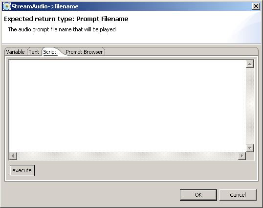

Scripting
In SafiWorkshop scripting can be used in most ActionSteps. To use the scripting engine to return a result (for a property value), click the button (in the value cell in the Properties pane) to bring up the value chooser and select the Script tab:

Scripting in SafiWorkshop is very similar to that of Javascript.